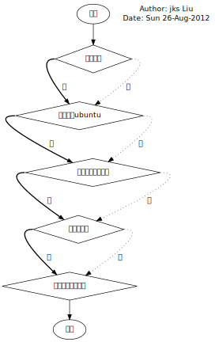

My Program
- Author
- JKS Liu
- Lincense
- CC BY-NC-SA

文章被托管在：https://github.com/jks-liu/xiaozhongren.com
前言
今天， 把自己使用的软件整理了一下， 方便大家参考。
选择program的原则

选择program时:
- 尽量沿着粗实线选择
- 尽量避免使用同一个公司的软件
- 尽量避免使用接受审查的软件
当然， 实际也有例外情况， 比如， 我喜欢使用chrome而不是firefox。
标记示例
- **
- 试用中
- *u
- ubuntu自带
- *w
- 只在M$中使用
- *p
- 私有软件
- *d
- 尽量不使用
- *f
- my favorite, 优先使用
- *s
- web site
- ()
- 在不同标签下重复列出
正文
- OS
- ubuntu *f
- win7
- winXP *d
- system
- gnome-shell
- bash *u
- tar *u
- unrar
- unzip
- (open)ssh
- apt-get *u
- git *f
- make
- aptitude **
- autoconf **
- automake **
- grep
- avast *w
- mingw *w
- cygwin *w
- pdfcreator *w
- tightvnc
- mysql **
- apache **
- internet
- browser
- chrome
- lynx **
- firefox
- file transfer putty *w curl filezilla lftp
- p2p
- bittorrent **
- utorrent **
- amule **
- mailnag **
- storage
- dropbox
- skydrive
- kuaipan *w
- github *s
- bitbucket *s
- browser
- editor
- emacs *f
- libreoffice
- gedit *u
- latex *f
- compiler & debugger
- sdcc
- gcc
- msp430-gcc
- python
- racket **
- mit-scheme **
- prolog **
- php **
- debugger
- mspdebug **
- gdb **
- ide
- arduino
- processing
- code::blocks
- keil *w
- iar *w*d
- math
- gnu octave
- matlab *w
- dictionary
- goldendict
- lingoes *w
- proxy
- goagent
- audio & vedio
- amarok
- osd lyrics
- mplayer *f
- kmplayer *w
- foobar2000
- audio & vedio editor
- blender
- lives **
- openshot **
- design
- gimp
- eagle
- (blender)
- autodesk cad/inventor *w
- protel/altium design/DXP *w
- proteus
- ditaa
- graphviz
- im
- gtalk
- msn
- qq *w
- irc
- library
- RTOS
- rt-thread
- usb
- libusb
- hidapi
- c++
- stl
- boost
- opengl **
- opencv **
- processing
- ControlP5
- arduino
- OneWire
- scm
- StellarisWare® Graphics Library
- wxwidgets
- wxgtk **
- RTOS
- extension
- chrome
- AdBlock
- Google Mail Checker
- OpenAttribute
- Proxy SwitchSharp
- YouTube Downloader: MP3 / HD Video Download **
- Chrome Toolbox (by Google)
- TV for Google Chrome™ **
- Unblock Youku **
- Keyboard Navigation **
- emacs
- libreoffice macroformatteradp
- chrome